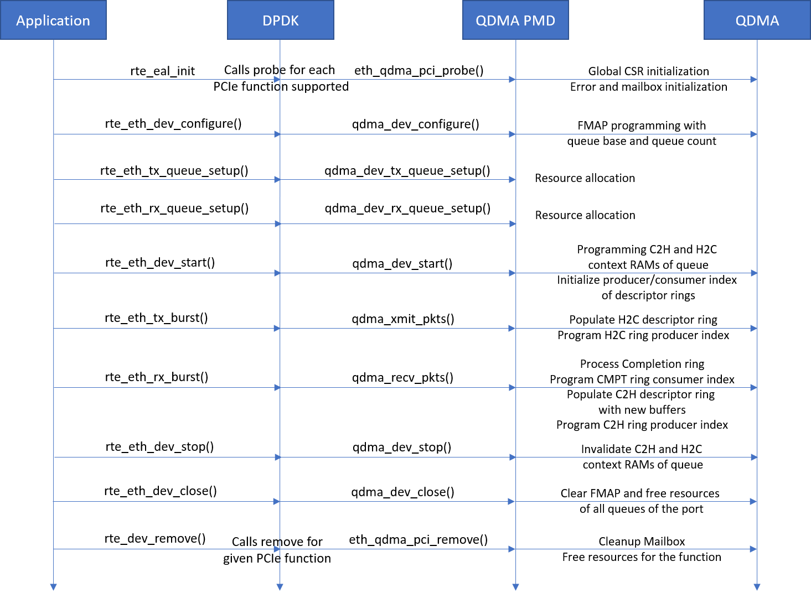

Driver Design¶
QDMA DPDK driver is implemented as an Ethernet poll mode driver in DPDK v18.11. It supports both streaming (network) and memory (compute) interface to QDMA. Below diagram gives a high level system overview of the QDMA DPDK driver.

Driver interfaces and callbacks¶
The Driver registers two driver interfaces (net_qdma for PFs and net_qdma_vf for VFs) with DPDK RTE.
Below eth_dev_ops callbacks are implemented by both driver interfaces of the DPDK driver.
static struct eth_dev_ops qdma_eth_dev_ops = {
.dev_configure = qdma_dev_configure,
.dev_infos_get = qdma_dev_infos_get,
.dev_start = qdma_dev_start,
.dev_stop = qdma_dev_stop,
.dev_close = qdma_dev_close,
.link_update = qdma_dev_link_update,
.rx_queue_setup = qdma_dev_rx_queue_setup,
.tx_queue_setup = qdma_dev_tx_queue_setup,
.rx_queue_release = qdma_dev_rx_queue_release,
.tx_queue_release = qdma_dev_tx_queue_release,
.rx_queue_start = qdma_dev_rx_queue_start,
.rx_queue_stop = qdma_dev_rx_queue_stop,
.tx_queue_start = qdma_dev_tx_queue_start,
.tx_queue_stop = qdma_dev_tx_queue_stop,
.stats_get = qdma_dev_stats_get,
};
Below sequence diagram depicts the application call flow to these driver callbacks and their high level operations.
Implementation details of the callback APIs is described further in
Additional interfaces are exported by the driver for QDMA configuration. These new interfaces are described in
Resource Management¶
Mailbox Communication¶
QDMA Hardware Error Monitoring¶
There are various causes for errors in QDMA IP e.g. descriptor errors, DMA engine errors, etc. If the errors are enabled by SW, QDMA logs the status of error in the respective global status registers.
DPDK driver executes a poll thread qdma_check_errors() every 1 second to check the error status and log the type of HW error occured on the console.
DPDK Driver debug¶
DPDK driver provides API rte_pmd_qdma_xdebug() to dump debug information. Below debug information can be dumped using this API
- Dump QDMA registers
- Dump queue contexts for the given queue id
- Dump software information for the given queue id
- Dump the specified descriptor ring of the given queue id
User application can call this API to dump the required debug information.